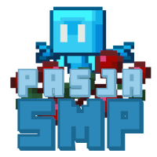

Pasjasmp.pl
Serwer zostaw wstrzymany do odwołania
Ip serwera będzie kierowane na inne interesujące lub zaprzyjaźnione serwery. Więcej informacji poprzez discord.
Serwer zostaw wstrzymany do odwołania
Ip serwera będzie kierowane na inne interesujące lub zaprzyjaźnione serwery. Więcej informacji poprzez discord.